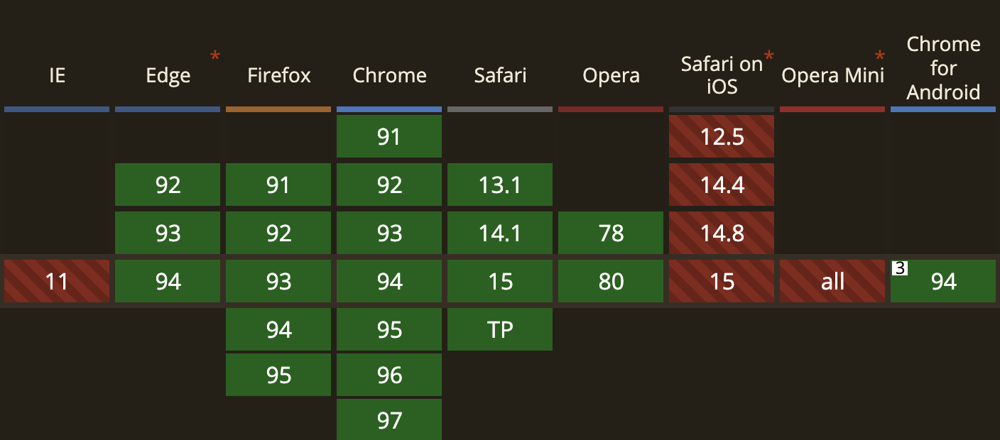

那些被忽略但很好用的 Web API / Notification
Posted by Max on
訂閱、分享、開啟小鈴鐺，才不會錯過通知喔～
各位有沒有收過網站的通知呢？例如 Youtube 或 Netflix 的新片通知，或是 Facebook 的訊息通知等等…，這個其實就是今天要介紹的 Notification 所達成的效果。
Notification
不過實話是，真的要像 Youtube 那樣在使用者沒有拜訪網站的狀況下發送通知，是需要使用 Service Worker 以及後端的配合，有興趣的人可以看看 這篇文章，有詳細說明如何推送未拜訪網站情況下的通知，而今天我們的範疇就先聚焦在如何在「瀏覽情況下」發送通知吧。
Notification 對於電腦瀏覽器到支援度是不錯的，但在行動裝置上就很糟糕了，iOS 全軍覆沒，Android 也是有使用上的限制，所以使用上還是需要注意一下的。
# Window.Notification
Notification 使用起來並不困難，它本身是一個建構函式，透過 new 關鍵字創建，並傳入一個必要參數即可：
// 檢查瀏覽器是否有支援 Notification
if ("Notification" in window) {
let notification = new Notification("這是一則通知");
}Notification 的第一個參數是 title，會顯示為通知的標題，該參數為必傳參數，而除了 title 之外，你也可以傳入一個可選參數 options，它為一個物件，當中有更多關於通知的詳細設定，下面我只列出幾個我認為比較實用的，若對其他屬性有興趣的話可以看 這裡。
- body： 一組字串，會設定為通知的內文，位置會在
title的下方。 - image： 一組圖片的 URL 字串，它會成為通知的主視覺圖片。
- icon： 一組圖片的 URL 字串，它會成為通知的圖標，位置大小依系統原生通知而定。
- data： 任意的資料格式，任何與通知相關的資料可以放在這，不會顯示在通知當中，一般情境下比較少用，
- requireInteraction： 一個布林值，決定通知必須要由使用者來關閉，而不是使其自動關閉，預設值為
false
注意： 每個作業系統對於不同的設定屬性有不同的支援或做法，最終的行為可能不會相同，例如 macOS 不支援
image圖片顯示。
<button onclick="notifyMe()">click</button>
<script>
function notifyMe() {
let notification = new Notification("這裡是通知的標題", {
body: "這裡是通知的內文",
icon: "./max.jpg",
image: "./max.jpg",
requireInteraction: true,
});
}
</script>
可以看到不同作業系統本身在通知的顯示上有很大的不同，而且針對同一個屬性也會有不同的行為模式：
- 首先在 macOS 上，右邊的圖示是根據
icon的設定顯示的，而非image，但 Microsoft 就同時顯示了icon和image。 - 再者，由於設定了
requireInteraction，所以當使用者沒有主動關閉中前 macOS 會將通知訊息疊加顯示，反之 Microsoft 並不會，要等到第一條通知被關閉後，第二條才會出現。
# Notification 實體
如果我們在創建 Notification 時有將宣告在變數中，我們就可以取得 Notification 實體，並訪問它的相關屬性，而它的屬性其實就是當初在呼叫建構函式時所傳入的參數，像是這樣：
let notification = new Notification("這是一則通知", {
body: "這是 Ｍax 的通知",
icon: "./max.jpg",
data: { name: "Max" },
requireInteraction: true,
});
console.log(notification.title); // "這是一則通知"
console.log(notification.body); // "這是 Ｍax 的通知"
console.log(notification.data.name); // "Max"
console.log(notification.requireInteraction); // true另外除了這些唯讀屬性外，我們還可以為通知綁定事件，而且事件的 Callback 也和其他事件一樣，可以接到一個 Event 物件，當中的 event.target 就會是被觸發事件的 Notification 實體。
可監聽的事件有:
click： 使用者點擊通知時觸發，關閉時的點擊不包含在內。error： 當通知發生錯誤時觸發。
let notification = new Notification("這是一則通知", {
body: "這是 Ｍax 的通知",
icon: "./max.jpg",
data: { name: "Max" },
requireInteraction: true,
});
notification.addEventListener("click", function (event) {
console.log(event.target.data.name); // "Max"
// 打開頁面是一個常見的點擊事件行為
window.open("https://maxleebk.com/", "_blank");
});# Window.Notification.permission
由於 Notification 算是一個有點打擾使用者的功能，所以使用前是需要取得授權的，而 Notification 這個建構函示（class）本身有提供 permission 這個靜態屬性讓我們確認授權的狀態。
當我們訪問 permission 時會讀取到一個表示授權狀態的字串，其值可能會是以下三種：
"granted"： 表示使用者允許網站的通知功能。"denied"： 表示使用者阻擋網站的通知功能，直到使用者主動到瀏覽器設定中開啟通知。"default"： 表示使用者對於通知功能還沒有明確的授權與否。
if (!window.Notification) {
console.log("這個瀏覽器不支援 Notification");
} else if (Notification.permission === "granted") {
let notification = new Notification("這是一則通知");
} else if (Notification.permission === "denied") {
alert("建議您允許通知，以收到最新消息");
}# Window.Notification.requestPermission
若是授權狀態為 "default"，那表示使用者並未對通知功能表示明確的答覆，這時候就需要我們使用 requestPermission 來詢問，它本身會再去確認一次授權狀態，若發現狀態為 "default" 就會跳出詢問授權的對話框，並且在使用者答覆之後利用 Promise 將結果丟給我們。
if (!window.Notification) {
console.log("這個瀏覽器不支援 Notification");
} else if (Notification.permission === "granted") {
let notification = new Notification("這是一則通知");
} else if (Notification.permission === "denied") {
alert("建議您允許通知，以收到最新消息");
} else if (Notification.permission === "default") {
Notification.requestPermission().then((result) => {
// result 相當於 Notification.permission
if (result === "granted") {
let notification = new Notification("這是一則通知");
}
});
}前面有說，其實 requestPermission 會自己再去確認一次狀態，如果為 "default" 才會詢問使用者，反之則會直接將授權狀態丟給我們，所以我們其實直接呼叫它就好，不一定要先透過 permission 來判斷。
Notification.requestPermission().then((result) => {
if (result === "granted") {
let notification = new Notification("這是一則通知");
} else if (result === "denied") {
alert("建議您允許通知，以收到最新消息");
}
});以上就是 Notification API 的大致內容了，但就如開頭所說，其實它還是搭配 Service Worker 才會有更強大的效果，尤其是網站有提供訂閱服務的話，那它的幫助絕對是非常大的，不過至少今天我們已經知道如何發送通知了，未來如果有機會和後端配合也可以快速上手。
- 此篇文章為「iT 邦幫忙鐵人賽」參賽文章，同步發表於 iT 邦幫忙 -